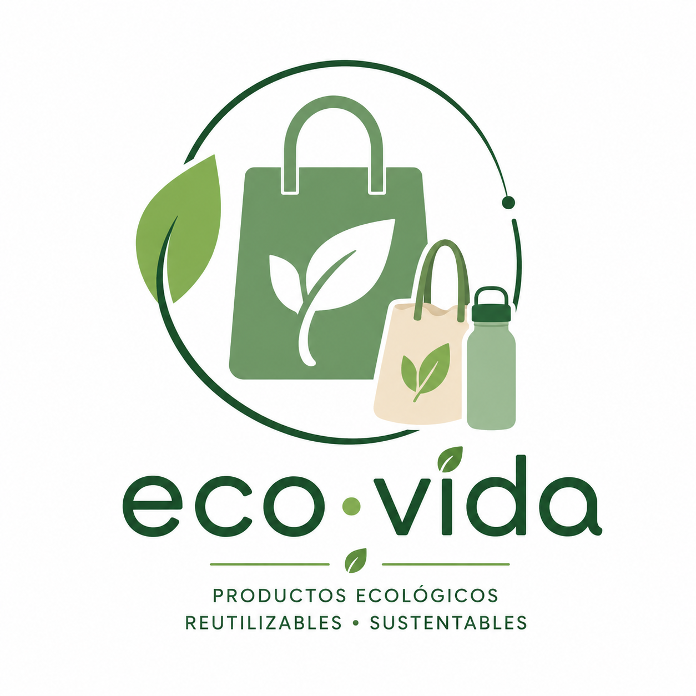

Eco -vida
Nuestros Valores
- Sostenibilidad: Nos esforzamos por minimizar nuestro impacto ambiental en todas nuestras operaciones.
- Calidad: Ofrecemos productos de alta calidad que cumplen con los estándares más exigentes.
- Transparencia: Creemos en la honestidad y la transparencia en todas nuestras interacciones.
- Comunidad: Apoyamos a las comunidades locales y fomentamos un sentido de comunidad entre nuestros clientes.
Misión
En Eco Vida trabajamos con el propósito de ofrecer productos ecológicos, sostenibles y de alta calidad que ayuden a cuidar el medio ambiente y a promover un estilo de vida más saludable y responsable. Buscamos crear conciencia sobre la importancia de reducir el impacto ambiental mediante el uso de alternativas amigables con la naturaleza, incentivando prácticas de consumo consciente en nuestra comunidad. Nuestro compromiso es brindar confianza, innovación y bienestar a cada uno de nuestros clientes, contribuyendo al desarrollo de un futuro más limpio y sostenible para las próximas generaciones.
Visión
Nuestra visión es convertirnos en una empresa reconocida a nivel nacional por liderar el mercado de productos ecológicos y sostenibles, destacándonos por nuestra responsabilidad ambiental, innovación y compromiso con la comunidad. Aspiramos a inspirar a más personas y organizaciones a adoptar hábitos responsables con el planeta, fomentando una cultura de respeto por los recursos naturales y el cuidado del entorno. En Eco Vida queremos ser un ejemplo de cómo las empresas pueden crecer de manera sostenible mientras generan un impacto positivo en la sociedad y el medio ambiente.
Nuestra Historia
Eco Vida nació con la idea de crear un espacio donde las personas pudieran encontrar productos amigables con el medio ambiente y aprender sobre la importancia de llevar una vida más sostenible. Todo comenzó como un pequeño proyecto impulsado por el interés de promover el cuidado del planeta y reducir el uso de productos contaminantes en la vida cotidiana.
Con el paso del tiempo, Eco Vida fue creciendo gracias al apoyo de clientes comprometidos con el cambio y la protección del medio ambiente. Nuestro catálogo se amplió incorporando nuevos productos ecológicos, siempre manteniendo altos estándares de calidad y sostenibilidad. Cada paso que damos refleja nuestro compromiso con la innovación, la responsabilidad social y el bienestar de nuestra comunidad.
Hoy en día, seguimos trabajando con la misma pasión con la que iniciamos, buscando inspirar a más personas a tomar decisiones responsables y contribuir a la construcción de un futuro más verde para todos.